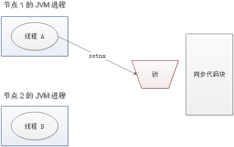
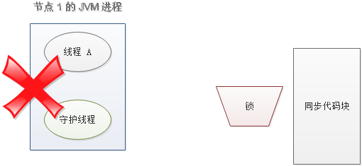

概述
分布式协调技术主要用来解决分布式环境当中多个进程之间的同步控制，让他们有序的去访问某种临界资源，防止造成”脏数据”的后果。

在这图中有三台机器，每台机器各跑一个应用程序。然后我们将这三台机器通过网络将其连接起来，构成一个系统来为用户提供服务，对用户来说这个系统的架构是透明的，他感觉不到我这个系统是一个什么样的架构。那么我们就可以把这种系统称作一个分布式系统。
在这个分布式系统中如何对进程进行调度，我假设在第一台机器上挂载了一个资源，然后这三个物理分布的进程都要竞争这个资源，但我们又不希望他们同时进行访问，这时候我们就需要一个协调器，来让他们有序的来访问这个资源。这个协调器就是我们经常提到的那个锁，比如说”进程-1”在使用该资源的时候，会先去获得锁，”进程1”获得锁以后会对该资源保持独占，这样其他进程就无法访问该资源，”进程1”用完该资源以后就将锁释放掉，让其他进程来获得锁，那么通过这个锁机制，我们就能保证了分布式系统中多个进程能够有序的访问该临界资源。那么我们把这个分布式环境下的这个锁叫作分布式锁。这个分布式锁也就是我们分布式协调技术实现的核心内容。
分布式锁
什么是分布式锁
为了防止分布式系统中的多个进程之间相互干扰，我们需要一种分布式协调技术来对这些进程进行调度。而这个分布式协调技术的核心就是来实现这个分布式锁。

分布式锁应该做到什么
- 在分布式系统下，同一方法在同一时间只能被一个机器的一个线程执行。
- 高可用的获取锁与释放锁
- 高性能的获取锁与释放锁
- 具备可重入特性（可理解为重新进入，由多于一个任务并发使用，而不必担心数据错误）
- 具备锁失效机制，防止死锁
- 具备非阻塞锁特性，即没有获取到锁将直接返回获取锁失败
分布式锁的实现
- Memcached：利用 Memcached 的
add命令。此命令是原子性操作，只有在key不存在的情况下，才能add成功，也就意味着线程得到了锁。 - Redis：和 Memcached 的方式类似，利用 Redis 的
setnx命令。此命令同样是原子性操作，只有在key不存在的情况下，才能set成功。 - Zookeeper：利用 Zookeeper 的顺序临时节点，来实现分布式锁和等待队列。Zookeeper 设计的初衷，就是为了实现分布式锁服务的。
- Chubby：Google 公司实现的粗粒度分布式锁服务，底层利用了 Paxos 一致性算法。
通过 Redis 分布式锁的实现理解基本概念
分布式锁的三要素
分布式锁实现的三大要素：加锁、解锁、锁超时。
业务场景
订单服务部署了多个，用户通过Nginx负载均衡来同时购买一个商品，但是此商品的数量很有限。这时通过分布式锁的技术来实现对临界资源的控制，让它们有序的访问。
加锁
最简单的方法是使用 setnx 命令。key 是锁的唯一标识，按业务来决定命名。比如想要给一种商品的秒杀活动加锁，可以给 key 命名为 “lock_sale_商品ID” 。而 value 设置成什么呢？我们可以姑且设置成 1。加锁的伪代码如下：
1 | setnx（lock_sale_商品ID，1） |
当一个线程执行 setnx 返回 1，说明 key 原本不存在，该线程成功得到了锁；当一个线程执行 setnx 返回 0，说明 key 已经存在，该线程抢锁失败。
解锁
有加锁就得有解锁。当得到锁的线程执行完任务，需要释放锁，以便其他线程可以进入。释放锁的最简单方式是执行 del 指令，伪代码如下：
1 | del（lock_sale_商品ID） |
释放锁之后，其他线程就可以继续执行 setnx 命令来获得锁。
锁超时
锁超时是什么意思呢？如果一个得到锁的线程在执行任务的过程中挂掉，来不及显式地释放锁，这块资源将会永远被锁住（死锁），别的线程再也别想进来。所以，setnx 的 key 必须设置一个超时时间，以保证即使没有被显式释放，这把锁也要在一定时间后自动释放。setnx 不支持超时参数，所以需要额外的指令，伪代码如下：
1 | expire（lock_sale_商品ID， 30） |
上述过程伪代码
1 | if（setnx（lock_sale_商品ID，1） == 1）{ |
上述存在的问题
setnx和expire的非原子性del误删- 出现并发的可能性
非原子性问题
设想一个极端场景，当某线程执行 setnx，成功得到了锁：

setnx 刚执行成功，还未来得及执行 expire 指令，节点 1 挂掉了。

这样一来，这把锁就没有设置过期时间，变成死锁，别的线程再也无法获得锁了。
怎么解决呢？setnx 指令本身是不支持传入超时时间的，set 指令增加了可选参数，伪代码如下：
如下解决
1 | set（lock_sale_商品ID，1，30，NX） |
这样就可以取代 setnx 指令。
del误删问题
又是一个极端场景，假如某线程成功得到了锁，并且设置的超时时间是 30 秒。

如果某些原因导致线程 A 执行的很慢很慢，过了 30 秒都没执行完，这时候锁过期自动释放，线程 B 得到了锁。

随后，线程 A 执行完了任务，线程 A 接着执行 del 指令来释放锁。但这时候线程 B 还没执行完，线程A实际上 删除的是线程 B 加的锁。

怎么避免这种情况呢？可以在 del 释放锁之前做一个判断，验证当前的锁是不是自己加的锁。至于具体的实现，可以在加锁的时候把当前的线程 ID 当做 value，并在删除之前验证 key 对应的 value 是不是自己线程的 ID。
加锁：
1 | String threadId = Thread.currentThread().getId() |
解锁：
1 | if（threadId .equals(redisClient.get(key))）{ |
但是，这样做又隐含了一个新的问题，判断和释放锁是两个独立操作，不是原子性。
出现并发的可能性
还是刚才第二点所描述的场景，虽然我们避免了线程 A 误删掉 key 的情况，但是同一时间有 A，B 两个线程在访问代码块，仍然是不完美的。怎么办呢？我们可以让获得锁的线程开启一个守护线程，用来给快要过期的锁“续航”。

当过去了 29 秒，线程 A 还没执行完，这时候守护线程会执行 expire 指令，为这把锁“续命”20 秒。守护线程从第 29 秒开始执行，每 20 秒执行一次。

当线程 A 执行完任务，会显式关掉守护线程。

另一种情况，如果节点 1 忽然断电，由于线程 A 和守护线程在同一个进程，守护线程也会停下。这把锁到了超时的时候，没人给它续命，也就自动释放了。

转载
此文内容摘抄自